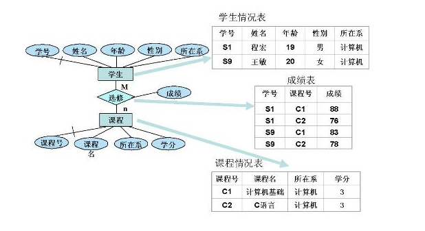

数据模型
数据模型由三部分组成：数据结构、数据操作和数据约束
- 数据结构：数据结构主要描述数据的类型、内容、性质、以及数据之间的联系，是整个数据模型的基础，而针对数据的操作和数据之间的约束都是建立在数据结构的基础上的；
- 数据操作：主要定义了在相应的数据结构上的操作类型和操作方式（数据库中的增删改查等）；
- 数据约束：数据约束主要用来描述数据库中数据结构之间的语法、词义联系以及彼此之间的相互约束和制约关系（如MySQL中使用外键保证数据之间的数据完整性）；
三种数据模型
- 概念数据模型（Concept Data Model，CDM）
- 逻辑数据模型（Logical Data Model，LDM）
物理数据模型（Physical Data Model，PDM）
概念数据模型（CDM）
- 概念数据模型是现实世界到信息世界的第一层抽象，主要是在高水平和面向业务的角度对信息的一种描述，通常作为业务人员和技术人员之间沟通的桥梁。作为现实世界的概念化结构，这种数据模型使得数据库的设计人员在最初的数据库设计阶段将精力集中在数据之间的联系上，而不用同时关注数据的底层细节（如所用的计算机系统的特性以及数据库管理系统---DBMS的特性）。
- 概念数据模型主要的贡献在于分析数据之间的联系，它是用户对数据存储的一种高度抽象，反应的是用户的一种业务层面的综合信息需求。
在这个阶段一般会形成整个数据模型或者是软件系统中的实体的概念以及实体之间的联系，为构建逻辑数据模型奠定基础。下图中描述了现实世界和信息世界以及最终转换成计算机世界信息的转换流程。
设计概念数据模型的主要工具是E-R图，扩展的E-R图。
逻辑数据模型（LDM）
- 逻辑数据模型是对概念数据模型进一步具体化，在概念数据模型定义实体的基础上定义了各个实体的属性，是用户从数据库的角度能够看到的数据的模型，是所使用的数据库管理系统（Database Management System，DBMS）所支持的数据类型（网状数据模型、层次数据模型、关系数据模型）。这种数据模型架起了用户和系统之间的桥梁，既要面向用户，同时也考虑到了所用的DBMS所支持的特性。
- 逻辑数据模型反映了系统分析设计人员针对数据在特定的存储系统（如MySQL）的观点，是对概念数据模型的进一步细化和划分。逻辑数据模型是根据业务之间的规则产生的，是关于业务对象、业务对象数据以及业务对象彼此之间关系的蓝图。
- 逻辑数据模型的内容包括所有的实体、实体的属性、实体之间的关系以及每个实体的主键、实体的外键（用于维护数据完整性）。其主要目标是尽可能详细的描述数据，但是并不涉及这些数据的具体物理实现。逻辑数据模型不仅会最终影响数据库的设计方向，并最终会影响到数据库的性能（如主键设计、外键等都会最终影响数据库的查询性能）。
- 逻辑数据模型是开发物理数据库的完整文档，逻辑数据模型主要采用的是层次模型、网状模型、关系模型，其中最常用的是关系模型，对应的数据库称之为关系型数据库，如MySQL。
物理数据模型（PDM）
- 物理数据模型，又称为物理模型，是概念数据模型和逻辑数据模型在计算机中的具体表示。该模型描述了数据在物理存储介质上的具体组织结构，不但与具体的数据库管理系统相关，同时还与具体的操作系统以及硬件有关，但是很多工作都是由DBMS自动完成的，用户所要做的工作其实就是添加自己的索引等结构即可。
- 物理数据模型是在逻辑数据模型的基础上，综合考虑各种存储条件的限制，进行数据库的设计，从而真正实现数据在数据库中的存放。其主要的工作是根据逻辑数据模型中的实体、属性、联系转换成对应的物理模型中的元素，包括定义所有的表和列，定义外键以维持表之间的联系等，具体例子如下： 